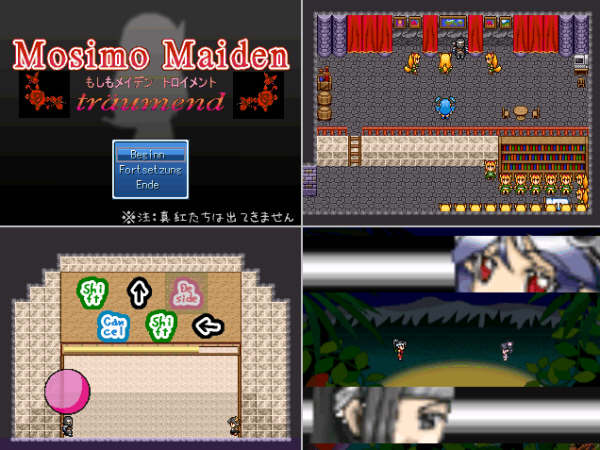

・ハンドルネーム ◆pipe/2Wu7Y
・ゲームタイトル MosimoMaiden traumend
・ゲームの簡単な説明
もしもメイデンシリーズ。それは、人形師ゴメスが作った石を持つ人間たち。
「もしもｗｋｔｋ」と呼ばれる石を持った者は人格を乗っ取られ、 お父様に認められるために、「ゴメス・ゲーム」に参加する使命を背負う。
いろんな作品のパロディを詰め込んだ、オリジナル要素の欠片もないインスパイヤ
作品。
現在、随意エターなり中！ その旋律は、夢見るように…。